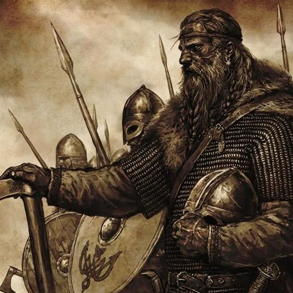

Some Background History of the Vikings

The term "Viking" is used to refer to the norsemen from the Scandinavian parts of Europe. This group of people was known for their large stature their hard appearance, and more famously their seafaring raids. They were known to go by sea along the coast of Europe using their longboats and proceed to raid seaside. Geographically, the Viking Age covered Scandinavian lands (modern Denmark, Norway and Sweden), and used the Norwegian Sea and Baltic Sea for sea routes to the south.